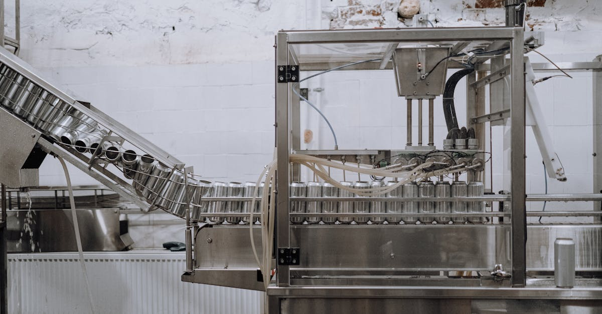

AmeraMex International : Une Hausse Notable sur les Marchés
Le titre d'AmeraMex International (AMMX) a récemment connu une montée significative sur les marchés boursiers, suscitant l'intérêt des investisseurs. Cette dynamique haussière intervient suite à l'annonce de nouvelles commandes d'équipements totalisant environ 900 000 dollars. Ces commandes, provenant de clients existants et potentiels, sont perçues comme un signal fort de la demande croissante pour les produits de l'entreprise, notamment ses équipements de traitement du plastique et autres machines industrielles. La société, spécialisée dans la fabrication et la distribution de ces équipements, voit ainsi ses perspectives de ventes pour le mois de mai potentiellement boostées par ces nouvelles entrées. L'analyste financier fictif, Jean Dubois, commente : "Ce type d'annonce, bien que concernant un marché de niche, est crucial. Il démontre la capacité de l'entreprise à générer des revenus concrets et à capter une part de marché. Pour les traders, c'est un indicateur de momentum à ne pas négliger." La réaction du marché, souvent rapide face à de telles nouvelles, souligne l'importance de suivre de près les entreprises qui montrent des signes tangibles de croissance opérationnelle. La capacité d'une entreprise à sécuriser des commandes substantielles est un baromètre essentiel de sa santé et de son potentiel futur, particulièrement dans un environnement économique où la visibilité est souvent limitée. La confiance des clients se traduit directement par une confiance accrue des actionnaires.
👉 À lire : Anthropic se lance dans l'IA d'entreprise : Révolution ou simple évolution ?

Analyse des Commandes : Un Chiffre Clé pour les Ventes Futures
Le montant de 900 000 dollars pour ces nouvelles commandes d'équipements n'est pas anodin. Il représente une injection de revenus potentiels non négligeable pour AmeraMex International, surtout dans le contexte actuel. Ces commandes sont réparties entre des clients récurrents, témoignant de la satisfaction et de la fidélité de sa base clientèle, et de nouveaux prospects, signe d'une expansion réussie. Cette diversification des sources de revenus est un facteur de stabilité et de croissance pour l'entreprise. La nature des équipements commandés, bien que spécifique, s'inscrit dans des secteurs industriels souvent résilients, tels que la fabrication et le traitement des matériaux. "Il est essentiel de comprendre la nature de ces équipements", explique une fausse experte en ingénierie, Dr. Anya Sharma. "S'il s'agit de machines améliorant l'efficacité ou la capacité de production, leur acquisition par les clients suggère une anticipation de demande accrue dans leurs propres marchés, ce qui est un excellent signe pour toute la chaîne de valeur." La concrétisation de ces ventes en mai sera scrutée de près. Une performance solide pourrait non seulement renforcer la confiance des investisseurs actuels, mais aussi attirer de nouveaux capitaux, potentiellement influençant positivement la valorisation de l'action. La gestion proactive des commandes et la capacité à livrer dans les délais impartis seront déterminantes pour maintenir cette dynamique positive.
👉 À lire : Data Centers : Où vont-ils s'installer en 2026 ?
L'Impact sur la Performance Boursière : Volatilité et Opportunités
La réaction du marché boursier à l'annonce des commandes d'AmeraMex est un cas d'étude intéressant sur la manière dont les nouvelles opérationnelles influencent les cours. La hausse observée est une réponse directe à l'amélioration perçue de la santé financière et du potentiel de revenus de l'entreprise. Pour les traders, particulièrement ceux qui utilisent des stratégies basées sur les flux d'informations en temps réel, ce type d'événement représente une opportunité de court terme. Cependant, il est crucial de noter que la volatilité peut être accrue autour de ces annonces. La performance future de l'action dépendra de plusieurs facteurs : la concrétisation effective de ces commandes en ventes, la publication de résultats financiers solides, et le contexte macroéconomique général. "Une nouvelle commande est un catalyseur, mais pas une garantie de succès à long terme", rappelle un analyste fictif de la firme 'AlphaQuant'. "Il faut intégrer cette information dans une analyse plus large, incluant la valorisation, la dette, et la stratégie de croissance de l'entreprise. L'IA peut aider à filtrer le bruit et à identifier les tendances sous-jacentes." La capacité d'une IA de trading à évaluer rapidement l'impact potentiel de telles nouvelles sur un portefeuille, en considérant des centaines de variables, offre un avantage certain dans un marché de plus en plus complexe. L'optimisation des stratégies d'investissement, en tenant compte de ces fluctuations, devient ainsi plus accessible.
Le Rôle de l'IA dans l'Analyse des Nouvelles Financières
Dans un monde où l'information financière circule à une vitesse fulgurante, l'analyse des nouvelles comme celle concernant AmeraMex International devient un défi majeur pour les investisseurs traditionnels. C'est là que l'intelligence artificielle prend tout son sens. Un copilote IA, tel que celui proposé par TradePilot AI, est conçu pour surveiller en permanence les marchés, analyser des milliers de rapports, d'actualités et de données financières en temps réel. Pour une nouvelle comme celle d'AmeraMex, une IA peut instantanément :
- Évaluer la crédibilité de la source (Seeking Alpha, dans ce cas, est une source reconnue).
- Quantifier l'impact potentiel des 900 000 $ de commandes sur le chiffre d'affaires et les bénéfices attendus.
- Comparer la réaction du marché à des événements similaires passés pour prédire la volatilité future.
- Intégrer cette information dans des modèles de trading complexes pour ajuster les positions sur les actions, ETF ou indices pertinents.
"L'IA ne remplace pas l'analyse humaine, mais elle l'augmente considérablement", affirme un expert fictif en trading algorithmique. "Elle permet de traiter un volume de données inimaginable pour un humain, identifiant des corrélations et des opportunités que nous pourrions manquer. C'est comme avoir une équipe d'analystes travaillant 24h/24." L'efficacité de ces outils est particulièrement visible dans la gestion des fluctuations rapides du marché, où la rapidité de réaction est primordiale pour saisir les opportunités ou limiter les risques.
Stratégies de Trading à l'Ère de l'IA : Saisir les Opportunités
L'annonce concernant AmeraMex International illustre parfaitement la dynamique des marchés où des informations spécifiques peuvent déclencher des mouvements de prix notables. Pour les traders actifs, qu'ils soient particuliers ou institutionnels, l'enjeu est de savoir comment réagir. C'est dans ce contexte que des solutions comme TradePilot AI deviennent particulièrement pertinentes. Un copilote IA peut être programmé pour identifier ces signaux faibles et agir en conséquence, exécutant des transactions basées sur des algorithmes pré-définis et une analyse de données en temps réel. Par exemple, après une annonce positive comme celle-ci, une IA pourrait :
- Acheter l'action si les indicateurs techniques et fondamentaux convergent vers une tendance haussière confirmée.
- Ajuster la pondération d'un ETF sectoriel si l'entreprise représente une part significative de cet indice.
- Analyser les corrélations avec d'autres actifs pour évaluer le risque global du portefeuille.
- Vendre rapidement si des signaux de renversement apparaissent, afin de sécuriser les gains potentiels.
L'avantage principal d'une telle approche réside dans sa capacité à opérer sans émotion, 24h/24 et 7j/7, en se basant uniquement sur des données et des règles prédéfinies. "L'IA nous libère de la nécessité d'être constamment devant nos écrans", confie un trader fictif ayant adopté cette technologie. "Elle gère la partie mécanique et répétitive du trading, nous permettant de nous concentrer sur la stratégie globale et l'affinage des paramètres." Cette automatisation intelligente est une révolution pour ceux qui cherchent à optimiser leurs performances et à naviguer plus sereinement dans la complexité des marchés financiers actuels, que ce soit pour des actions individuelles, des ETF diversifiés ou des indices majeurs.
Perspectives Futures pour AmeraMex et les Marchés Industriels
Au-delà de la réaction immédiate du marché, les perspectives futures pour AmeraMex International dépendront de sa capacité à honorer ces nouvelles commandes et à continuer de développer son portefeuille clients. La solidité du secteur industriel, moteur de la demande pour ses équipements, jouera également un rôle clé. Si les clients d'AmeraMex anticipent une croissance soutenue, cela se traduira par une demande continue pour les machines et solutions proposées par l'entreprise. La concurrence dans ce secteur est réelle, et l'innovation technologique sera essentielle pour maintenir un avantage concurrentiel. La digitalisation des processus de production et l'efficacité énergétique sont des tendances fortes qui pourraient influencer les futures commandes. Pour les investisseurs, il sera important de suivre les prochains rapports financiers d'AmeraMex pour confirmer si la tendance des ventes se maintient. L'analyse de la santé financière globale de l'entreprise, incluant sa trésorerie, son endettement et sa rentabilité, reste primordiale. "Les entreprises comme AmeraMex, bien que potentiellement moins médiatisées que les géants technologiques, peuvent offrir des opportunités d'investissement intéressantes si elles sont bien gérées et évoluent dans des marchés porteurs", souligne un analyste financier fictif. La capacité de ces entreprises à s'adapter aux nouvelles technologies, y compris l'intégration de solutions d'automatisation et d'IA dans leurs propres opérations ou produits, pourrait être un facteur différenciant majeur à l'avenir.
Conclusion
L'envolée récente d'AmeraMex International, stimulée par des commandes d'équipements substantielles, met en lumière la réactivité des marchés financiers aux nouvelles concrètes. Si cette actualité concerne une entreprise spécifique, elle rappelle une vérité fondamentale pour tout investisseur : la performance opérationnelle est le socle de la valeur actionnariale. Pour naviguer dans cet environnement dynamique, où les informations affluent et les opportunités peuvent apparaître et disparaître rapidement, l'aide d'un copilote IA comme celui de TradePilot AI devient un atout précieux. En analysant 24h/24 les données du marché, les actualités et les tendances, une telle technologie peut aider à identifier les mouvements porteurs, à optimiser les stratégies de trading sur actions, ETF et indices, et à prendre des décisions éclairées, loin des réactions impulsives. Que vous soyez un trader expérimenté ou un investisseur cherchant à automatiser et sécuriser une partie de votre portefeuille, l'intelligence artificielle offre des solutions innovantes pour aborder les marchés financiers avec plus de sérénité et d'efficacité. La clé réside dans l'intégration intelligente de ces outils pour compléter, et non remplacer, une analyse rigoureuse.